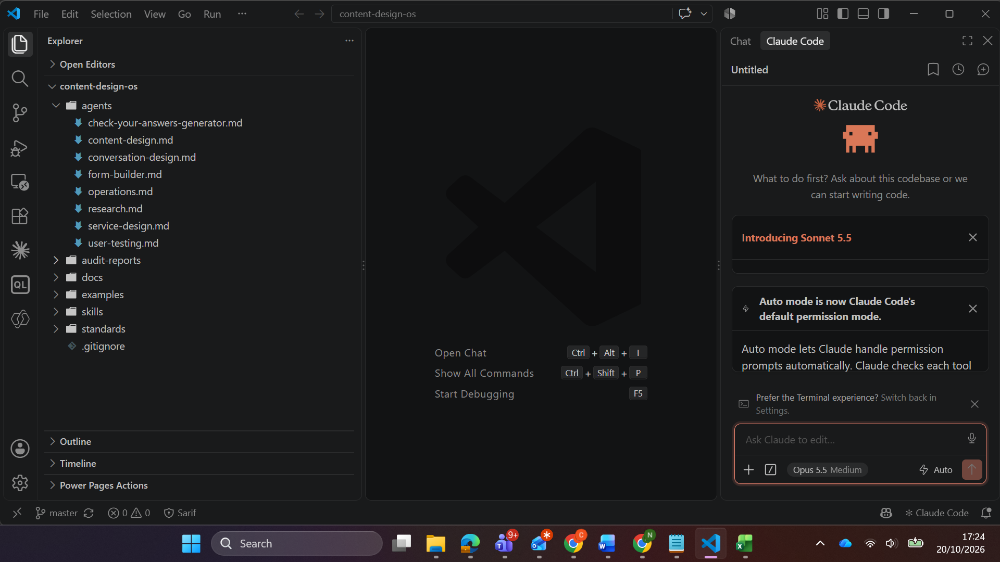

The organisational problem
The council digital team maintains transactional forms, content change requests, audits and a migration to Local Gov Drupal. Good delivery depends on a detailed house style, service rules, CMS procedures and the judgement of experienced designers.
That knowledge was spread across documents and people. Repeating the same checks and form patterns made maintenance harder, while inconsistent guidance could reach different parts of the workflow.
I designed the OS to make that knowledge reusable through three connected choices.
- A shared knowledge layer for content standards, behavioural principles and CMS procedures.
- Specialised agent instructions and deterministic scripts for the different kinds of work.
- Reviewable outputs and an explicit human release step before notification.
My contribution covered the shared standards, agent responsibilities, the audit workflow and the approval handoff. The project record documents a core system in use on a live form-migration programme, with operational impact measurement underway.
Architecture and design decisions
1. Thin agents, shared standards
This is the central architectural decision. Instead of each agent carrying its own copy of the style guide and procedures, the standards live once in a shared folder and every agent reads them.
Each agent is configured to read the shared standards. Updating the authoritative guidance in one place reduces duplicated maintenance. Review still needs to verify which rule an agent used and whether it applied that rule correctly.
2. A behavioural-science layer
Most content tooling stops at "is it plain English?" I wanted the OS to ask a harder question: does this work with how people actually think?
The shared standards include a behavioural-principles file. It covers cognitive load, framing and defaults, friction (where to remove it and where to add it deliberately), the Behavioural Insights Team's EAST framework, trust and reassurance for high-stakes services, error psychology, and attention and salience.
The shared file gives operations, service design and conversation design a common basis for reviewing cognitive effort, reassurance and the sequence of a task. A reviewer can then examine how that guidance shaped the recommendation.
3. Separate mechanical checks from model judgement
This was a judgement call about what an AI agent does well and what needs real code. Reasoning and writing suit an agent: rewriting to style, reviewing a page, drafting a summary, designing a flow.
Mechanical work at scale needs a script, not a prompt. That means fetching 20 pages, following every link, comparing text for duplication and producing an Excel report.
So the content-audit tool is a tested Python engine. The agent invokes it, reads the output and turns it into human-readable communication. Each does what it is good at.
4. A hard safety gate on the audit engine
The script refuses any URL that isn't a public royalgreenwich.gov.uk page. Other domains and login-walled paths are rejected, so it can't wander off-site or reach authenticated data.
The project record describes rejection checks for spoofed hostnames and admin paths. Those checks and their published evidence are set out in the testing section below.
The engine checks links, dates, duplication and mechanical accessibility signals such as missing alt attributes and generic link text. Interpreting whether content is useful, accurate or appropriate to the task remains a review activity.
5. A human gate, enforced by the architecture
Reports land in a local staging folder that the person reviews. Nothing reaches a notification channel until they deliberately move an approved report into a watched folder.
It would have been technically possible to have the AI post straight to Teams. I chose not to, because that would collapse the human gate I had designed.
Power Automate was the right fit precisely because it's dumber. It reacts to a file the human moves and sends through the council's own authenticated channels. The automation triggers on the person's decision, not the AI's judgement.
The content-audit pipeline
The most involved piece. It takes a page or a list, runs mechanical checks, and produces a reviewable report — with a deliberate human gate before anything is sent. The two points in the accent colour are the governance controls: the safety gate that keeps the script on public council pages, and the human gate that no report passes without a person.
How the agents work together
The OS isn't eight isolated prompts. It's a team with a flow of work between them. Research feeds service design, which maps journeys and commissions work.
Operations rewrites content and the form-builder builds the form. The check-your-answers generator produces the summary page, and user testing validates the change and feeds back to service design. Conversation design handles the assistant, and content design handles drafting and critique.
Each agent follows the same thin-agent pattern and reads the same shared standards.
Implementation evidence
These published artefacts show how the repository is organised and how an approved report enters the notification flow. The diagrams are architecture views from this case study.

agents/ reading from standards/ and docs/, with the skills/ audit engine and a local examples/ library — one version-controlled home.
Open the architecture artefacts
- Shared standards and agent responsibilities · SVG
- Audit pipeline and approval boundary · SVG
- Work handoffs between agents · SVG


Exported from the diagrams already documented in this case study. The underlying agent source and internal standards remain private.
Evaluation and failure analysis
The project record describes boundary checks, a tested notification flow and three corrections made during development. The public evidence currently comprises the implementation screenshots, architecture diagrams and this account of the checks.
| Check | Recorded result | Evidence scope |
|---|---|---|
| Audit input boundary | Spoofed hostnames and admin paths were reported as rejected. | Described in the project record. Raw test inputs and run logs are private. |
| Approval to notification | A person moves an approved report into the watched folder, which triggers the notification flow. | The flow configuration is pictured above. End-to-end testing is reported in the project record. |
| Shared standards | Eight agent roles are configured to read common guidance. | The repository structure and architecture are documented. Consistency and correction rates are still being measured. |
Failures that changed the design
| Finding | What I changed | Why it matters |
|---|---|---|
| The first standards draft came from an existing prompt. | I rebuilt it from the official April 2024 style guide, including its A–Z, plain-English checklist and alternatives table. | Guidance has an authoritative source that a reviewer can check. |
| Procedures named individual colleagues. | I replaced names with roles. | Instructions stay useful when people change roles and reduce unnecessary personal information. |
| Form exports contained routing email addresses belonging to third parties. | I excluded all 27 example forms from version control and kept them local. | Reference material can support the workflow while staying within the intended data boundary. |
Results and limitations
The core system is documented as built and in use on a form-migration programme. The counts below describe implementation scope.
Specialised agents sharing one set of standards — operations, service design, research, user testing, conversation design, form builder, content design, and a check-your-answers generator.
Mechanical check types in a tested audit engine — broken links, outdated dates, duplicate content and mechanical accessibility — behind a public-only safety gate.
Real forms analysed as reference patterns for the form-building agents, kept local and out of version control for data protection.
Shared guidance gives the team one place to maintain standards. The audit workflow produces a reviewable report, and notification follows the human release step. Whether these controls reduce corrections and delivery effort is being measured.
Operational measures in progress
- Audit completion time compared with the manual workflow.
- Pages and forms processed through the tools.
- Style-guide corrections required at review.
- Time for a new team member to produce work to the agreed standard.
How to interpret the evidence
The screenshots and diagrams support the implementation account. OS-wide timing benchmarks, independent repeat runs and a public regression suite remain gaps. Internal documents and live form exports are kept private for confidentiality and data protection.
What I learned
- Architecture beats features. The single most valuable decision was "thin agents, shared standards." It's what makes the system maintainable and honest; everything else is downstream of that.
- Know what AI shouldn't do. The system is stronger because it keeps a human in the loop on judgement and public communication, and uses plain code for mechanical work. Resisting the temptation to automate the final send was a design strength, not a limitation.
- Sanitise before you commit. The third-party-email finding was a reminder that data protection is a build-time discipline, not an afterthought.
What I would do next
Turn the OS into a templated solution pack for other content and UX teams. The architecture is deliberately generic, and only the content is Greenwich-specific.
The next phase separates the reusable framework from the customer's own layer. The framework is the thin agents reading shared standards, the behavioural-principles layer, the quick-check-versus-audit routing, the audit engine and the human-gated notification pattern. The customer's layer is their style guide, CMS procedures and domain.
It would ship with fully fictional worked examples, and the audit engine would become config-driven so the target domain isn't hardcoded.